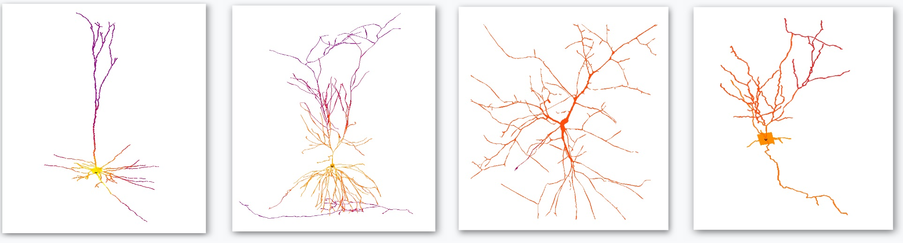

Neuroalgebra
Neuroalgebra
BRAINCELL

Introducing BRAINCELL 1.0: your gateway to the microscopic universe of brain cells. Designed to bridge the gap between theoretical neuroscience and practical application, BRAINCELL is more than just software. It’s a comprehensive tool that enables researchers, neuroscientists, and medical professionals to delve deep into the brain’s inner mechanisms, study responses to various stimuli, and assess the effectiveness of treatments. BRAINCELL offers an unprecedented level of detail in simulating neurons and astrocytes, achieving nano-geometry precision to mirror the brain’s intricate complexities.
At its core, BRAINCELL enhances the renowned NEURON simulation environment, introducing advanced features like inter-cellular interactions, spatially variant parameters, the incorporation of external influences, and the integration of stochastic elements, thus broadening the horizons of computational neuroscience.
Dive into the BRAINCELL experience! Comprehensive guides are available to facilitate your journey, whether you prefer a step-by-step tutorial on GitHub or our detailed documentation.
Key Features
- Realistic Cell Models: Harness the power to create and simulate detailed models of neurons and astrocytes, each crafted with nano-geometry precision to reflect real-world complexity.
- Customizable Parameters: Fine-tune your simulations by adjusting key parameters like membrane capacitance, ion conductance, synaptic strength, and more, observing the resultant cellular behavior in real-time.
- User-Friendly Interface: BRAINCELL is designed to cater to both seasoned computational neuroscientists and newcomers, offering a seamless and intuitive user experience coupled with extensive customization capabilities.
- Comprehensive Documentation: From installation to simulation analysis, our in-depth user manual provides all the guidance you need to harness the full potential of BRAINCELL.
- Ongoing Support: Our commitment to your research extends beyond software provision. We offer continuous support to help you unlock groundbreaking insights into brain functionality.
Building Realistic Cell Models
Crafting a realistic cell model is an art that involves meticulous attention to detail. Here are some critical components to consider:
- Cell Processes: Start by importing a 3D reconstructed tree of principal cell processes from neuromorpho.org, or create your own artificial cell arbors tailored to your research needs.
- Astrocyte Nanostructures: Accurately reconstruct nanoscopic astroglial processes, ensuring their statistical properties align with observed biological data.
- Neuron Nanostructures: Leverage our software’s capability to automatically generate synaptic spines, each parameterizable to suit your study’s requirements.
- Tissue Volume Fraction: Quantify the volume occupied by astroglia and neurons, accounting for the radial distribution emanating from the soma.
- Membrane Surface Density: Employ 3D reconstructions to accurately map nanoscopic processes and their impact on membrane surface area.
- Functional Data: Enrich your models by integrating functional data such as I-V curves, electrical response characteristics, and intracellular ionic dynamics.
Embrace the power of BRAINCELL and embark on a journey to unlock the mysteries of the brain through precise simulation and deep understanding.